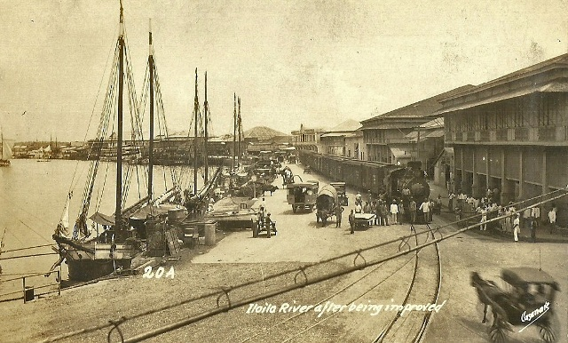

The Maragtas Legend tells the history of Iloilo way back in the 13th century, when Datu Puti and his fellow Datus, together with their families, warriors and slaves fled from the tyranny of Sultan Makatunao of Borneo and landed at the mouth of the Sirawag River, now known as the town of San Joaquin and eventually settled there.
At that time, people called the “Atis” who were ruled by King Marikudo and Queen Maniwangtiwang, inhabited Panay. King Marikudo bartered the lowlands of Panay Island for a golden hat, “saduk”, and a long gold necklace, “manangyad”, and other assorted gifts to the Bornean Datus. The latter then took complete control of the island with the “Atis” retiring to the mountains. It was Datu Paiburong who was assigned in Irong-Irong (shaped like a nose), which was later known as Iloilo.
Panay Island was ruled under the Code of Kalantiao, where peace and prosperity reigned for 300 years. But this was disrupted when the Spaniards came and established the provincial government.
Municipio de Iloilo, became a city under the Bacura Law in 1893; and in 1896, the King of Spain cited the City of Iloilo “la muy leal”, and “noble ciudad de Iloilo”, in recognition of the loyalty of her people to the Spanish Government.
When the Philippine Revolution started, the Panay uprising against the Spaniards was led by Gen. Martin Delgado of Sta. Barbara, who liberated all towns except Iloilo City, Molo, and Jaro. December 28, 1898 marked the arrival of the Americans at the Iloilo port, and on April 11, 1901, Iloilo city whose status has reverted to municipality, became the chief port and trading center of Panay and Negros. Because it progressed steadily, the Commonwealth Act No. 158 incorporated the surrounding towns of Lapaz, Jaro, Mandurriao and Arevalo to form Iloilo City and was finally inaugurated on August 25, 1937, and was dubbed as the “Queen City of the South”, Gen. Martin Delgado became the first governor of the Province of Iloilo.
Iloilo is a province of the Philippines, located in the center of the Philippine archipelago. The province comprises the southeastern part of Panay Island with island-province of Guimaras just across its coast. The capital city of the province of Iloilo is the City of Iloilo, which is also one of the major urban centers in the Philippines. It is nicknamed “the Heart of the Philippines”.

Iloilo is a province of the Philippines, located in the center of the Philippine archipelago. The province comprises the southeastern part of Panay Island with island-province of Guimaras just across its coast. The capital city of the province of Iloilo is the City of Iloilo, which is also one of the major urban centers in the Philippines. It is nicknamed “the Heart of the Philippines”.

This is the sidebar content.